SmartHome economy ft. MicroPython on ESP8266

Problem statement
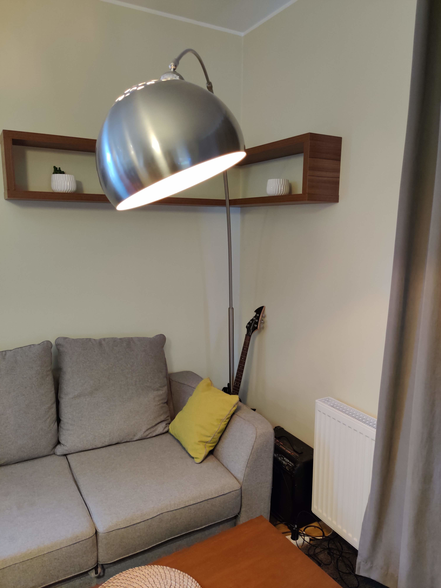
Ktoś już rozwiązał ten problem…
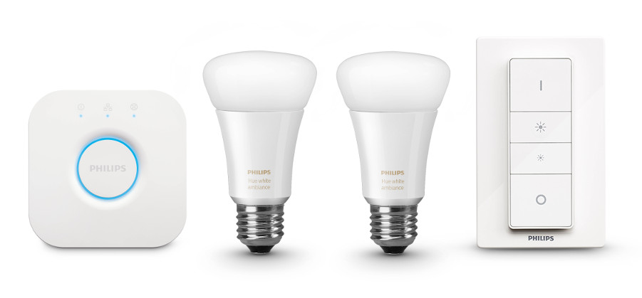
| budżet 50zł | |
| no fun |
Prototyp
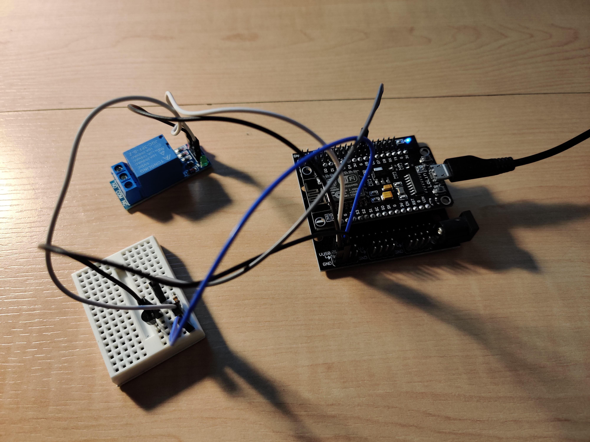
NodeMCU
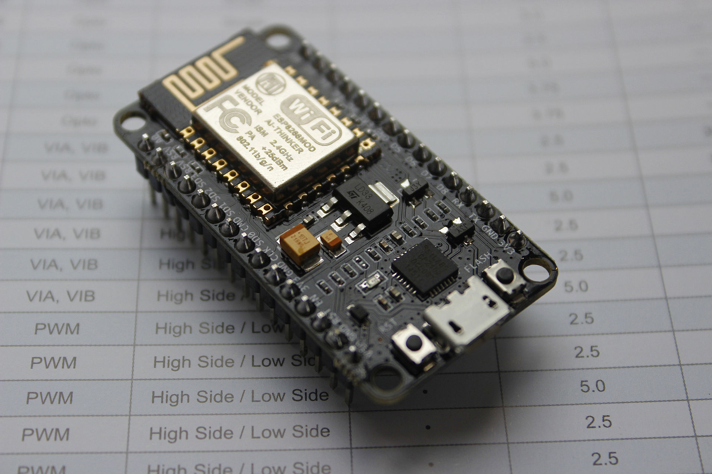
Przekaźnik 5V - 230V
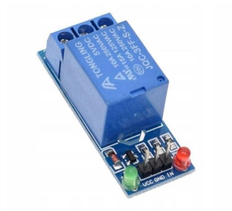
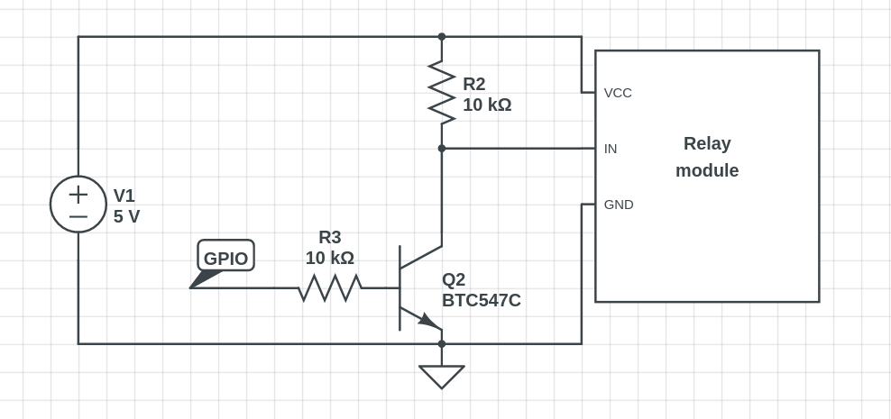
koszt
| NodeMCU devkit | 20 zł |
| przekaźnik | 4 zł |
| tranzystor | 1 zł |
| RAZEM | 25 zł |
Micropython
- 256kB ROM
- 16kB RAM
Features:
- REPL --> możliwość eksperymentowania
- WebREPL - REPL po websocket - bez kabla
- “baterie w zestawie” :)
- HW (GPIO, PWM, I2C, SPI, etc.)
- network sockets
- JSON parsing
- i wiele innych…
- C/C++ extensions
Demo
BLYNK.IO
We make Internet of Things simple
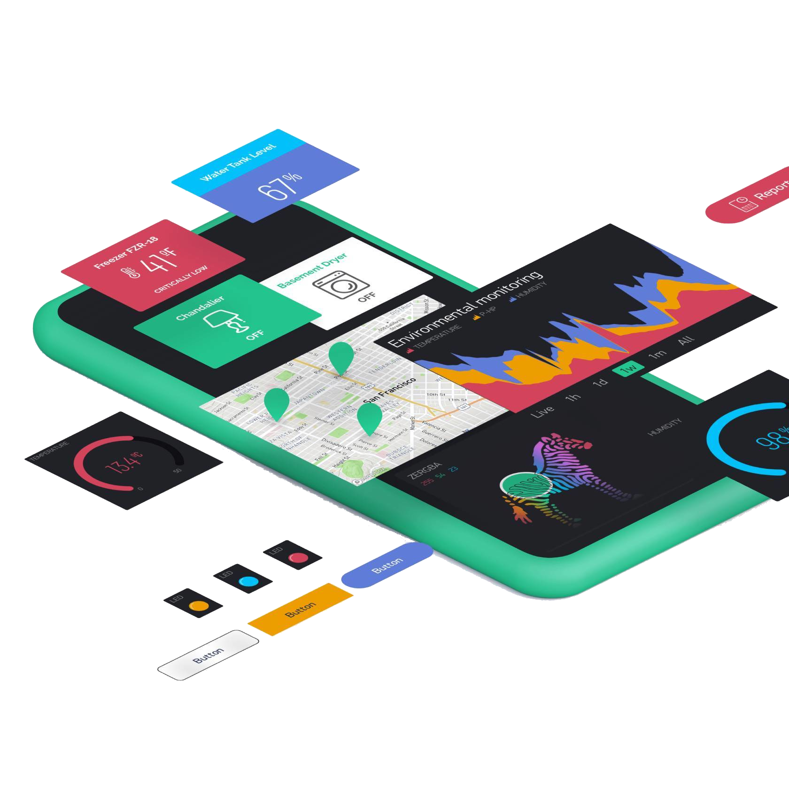
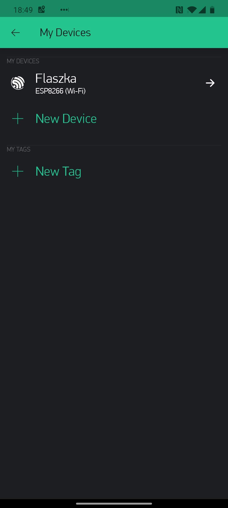
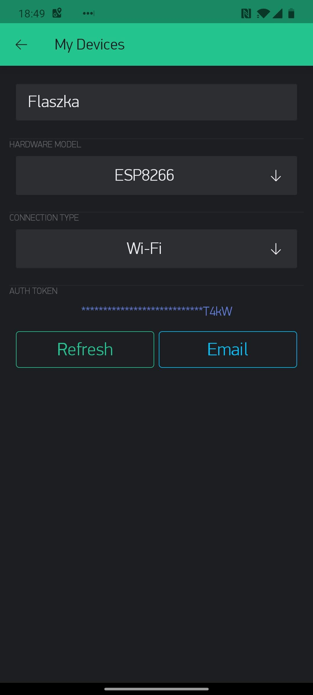
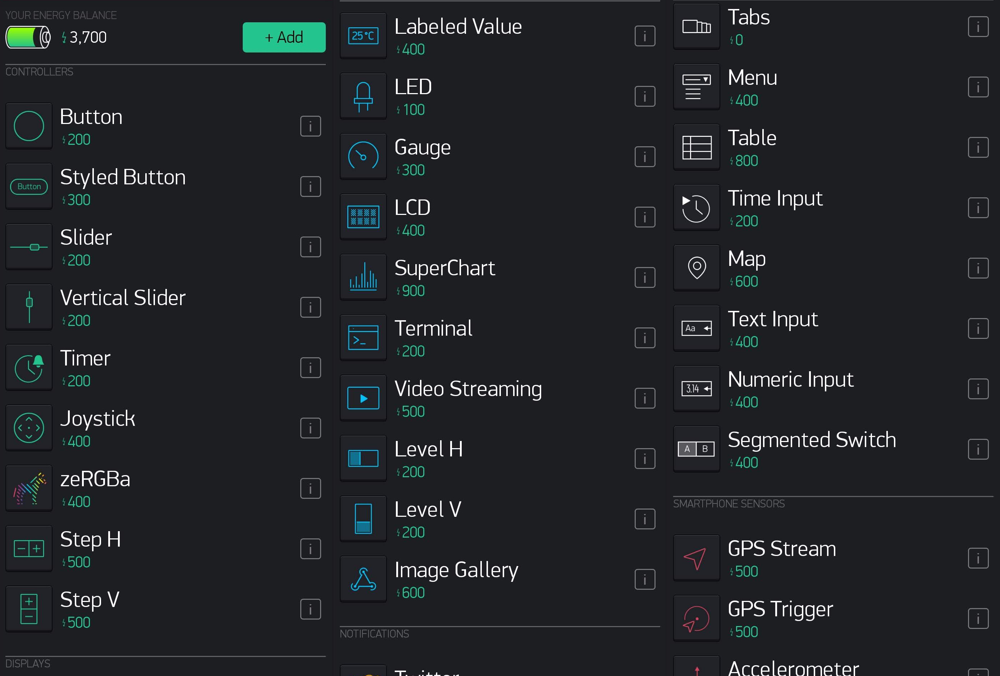
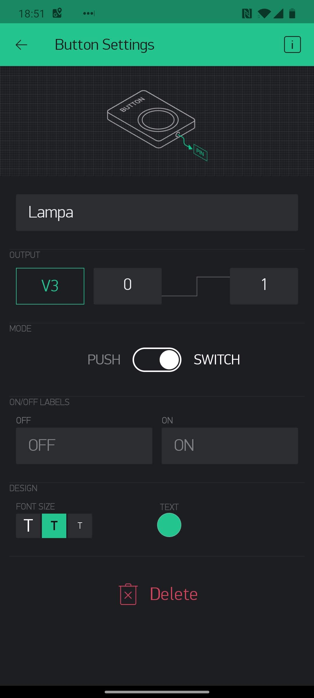
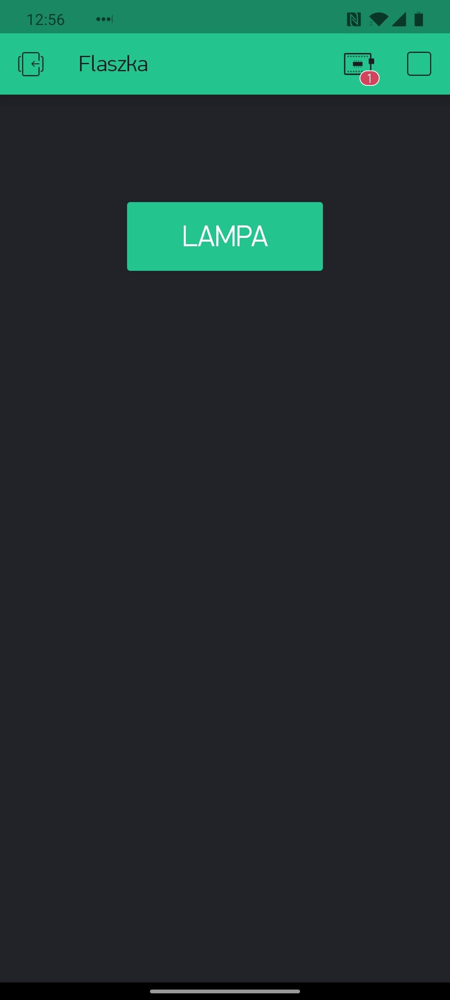
Kod obsługi przekaźnika
relay_pin = machine.Pin(3, machine.Pin.OUT)
blynk = blynklib.Blynk(BLYNK_AUTH)
@blynk.handle_event("write V3")
def write_relay(pin, values):
relay_pin.value(int(values[0]))
@blynk.handle_event("read V3")
def read_relay():
blynk.virtual_write(3, relay_pin.value)
Prototyp
SONOFF
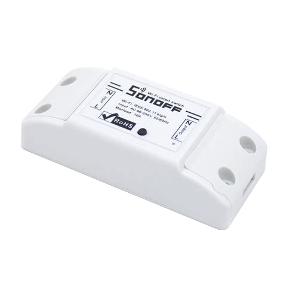
Koszt
| 1-razowo USB - UART | 10 zł |
| sonoff basic | 26 zł |